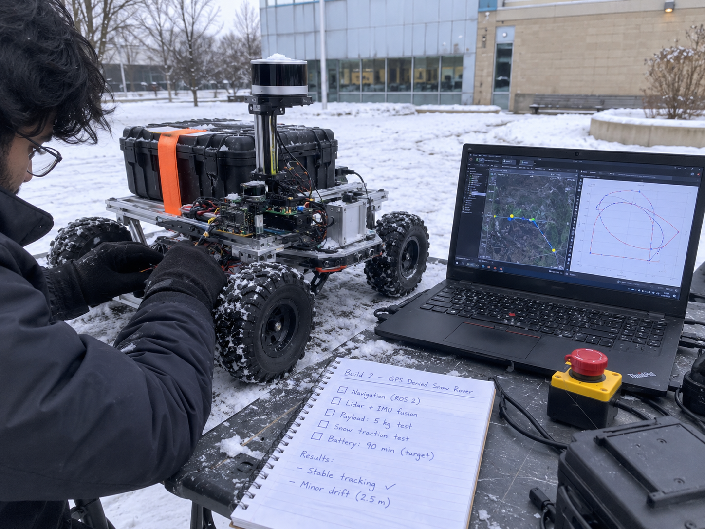
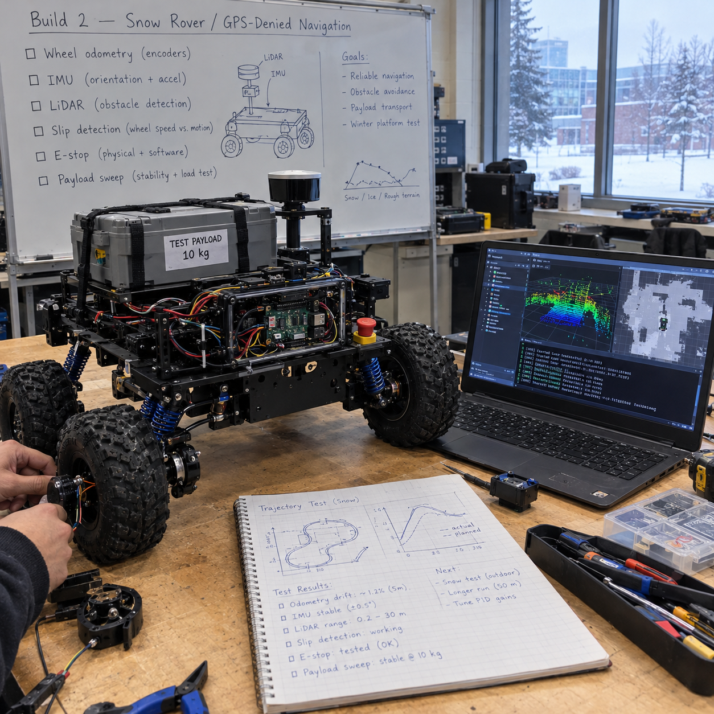

GPS-Denied Cargo Ground Vehicle for Snow
A 10-30 kg payload testbed that measures navigation error, wheel slip, and energy use across sensor sets, payloads, and snow conditions, with RTK GNSS used only as ground truth, against the MINERVA cargo and surveillance UGS specs.
Overview
This is a planned build guide for a small GPS-denied cargo ground vehicle tested on snow: a ROS 2 rover that fuses wheel encoders, an IMU, and LiDAR-inertial odometry through an EKF, measures its own navigation error, wheel slip, and energy use at 10-30 kg payloads, and scores every run against RTK GNSS carried only as ground truth.
The yardstick is real: two MINERVA ground challenges, a cargo uncrewed ground system and a surveillance uncrewed ground system, were published through Innovative Solutions Canada and closed in September 2026. They read like engineering specs, not marketing: carry 140 kg, tow 275 kg, hold 7 km/h cross-country with rated payload, climb 20% grades, run from -20 to +40 C. Those challenges are closed to new proposals, so this page uses them as spec sheets the way the Arctic UAS page uses its closed challenge: a published, measurable target to build against.
Scope honesty up front: nothing on this page is built or tested yet. A solo bench build cannot meet a 140 kg payload or a 410 kg vehicle class, and this guide does not pretend otherwise. What it can do is build the navigation-and-energy core at hobby scale, measure it honestly on pavement, gravel, and real southern Ontario snow, and publish a gap table that says exactly which spec lines were met, partly tested, or never touched. The output is scaling arguments and data, not a compliance claim.
Winter is the point of the build, not a complication. Published research says LiDAR odometry degrades in snowfall, wheel odometry drifts when wheels slip, and snowbanks defeat localization methods that work fine in summer. The test plan is built around those failure modes: it goes looking for them, logs them, and reports the limits instead of the highlight reel.
Concept Illustrations


Target Spec
These requirements come from the two MINERVA ground challenge notices (closed September 2026, used here as spec sheets). Shared lines apply to both the cargo and the surveillance notices; cargo-only and surveillance-only lines are marked. Numbers marked (est.) are calculated from the cited specs; items marked (verify) were not confirmed against a primary source.
| Requirement | Spec | Applies to |
|---|---|---|
| System contents | Ground vehicle + sensor payload + ground control station (GCS) + radio + battery with multi-battery charger + remote antenna 100 m from the GCS | Shared |
| Temperature range | Operate -20 to +40 C | Shared |
| Unladen mass | No more than 410 kg (a cap, not payload) | Shared |
| Speed and endurance | At least 15 km/h and 4 h continuous motion, unladen | Shared |
| Terrain and visibility | Paved roads, sand, gravel, day/night, minimum 15 degree gradients | Shared |
| Cross-country | Sustain 7 km/h cross-country with rated payload | Shared |
| Mobility obstacles | Climb 20% grades, 15% side slopes, 250 mm vertical step, cross a trench (the surveillance notice says 500 mm; the cargo notice prints 500 m, which is almost certainly a typo, so this guide uses 500 mm and says so) | Shared |
| Payload onboard | Carry 140 kg including a tri-wall container 122 x 102 x 92 cm | Cargo only |
| Towing | Tow 275 kg | Cargo only |
| Radio radius | 5 km unladen with live video; 10 km autonomous | Cargo only |
| Radio radius | 3 km | Surveillance only |
| Recognition | Recognize a 180 cm person at 0.5 km day / 0.25 km night; a 5 x 3 x 2 m vehicle at 1 km day / 0.5 km night | Surveillance only |
| Sensor elevation | Look over a 1 m obstacle with 180 degree pan | Surveillance only |
| Stationary endurance | 48 h on sensor payload | Surveillance extra |
| Guest payload | Room, power, and API for a 100 lb payload at 30 W | Surveillance extra |
| Cost | $150,000 or less | Surveillance extra |
| Acoustic signature | No more than 5 dB SPL at 500 m | Surveillance extra |
| Control link | Fibre-optic control from 100 m | Surveillance extra |
| Logistics | NATO tow hook; two vehicles per PLS deck; ready in 30 min | Surveillance extra |
| Propulsion | Electric or hybrid; front obstacle avoidance | Surveillance extra |
| GCS features | Mission simulation, MGRS, TAK push, return-on-link-loss | Surveillance extra |
What the Hobby Version Proves
The hobby-scale build is a 10-30 kg payload testbed. It does not carry cargo for anyone; it measures how the things a cargo UGV lives or dies on behave when the ground is white and the sky gives no position:
- Navigation error without GNSS. How drift grows with distance for each sensor set (encoders + IMU alone, with LiDAR odometry, with radar velocity), scored against RTK GNSS used strictly as ground truth, never fused into the estimate being graded.
- Wheel slip behaviour. How slip ratio and a yaw-disagreement slip detector track stuck events and error spikes on packed snow, loose snow, gravel, and pavement.
- Energy use. Wh/km across payloads of 0/10/20/30 kg, plus a 48 h stationary energy budget for a 30 W guest payload that sizes the battery and its cold derating.
- Sensor degradation in snow. Where LiDAR odometry starts losing track as snowfall gets heavier, and whether a snow point filter and radar ego-velocity actually recover it, at hobby scale.
- Scaling arguments, not compliance. Published math from measured small-scale data toward the spec numbers, with the assumptions stated and the gap table below kept honest.
What the research says will go wrong
- LiDAR degrades in snow through dropout and near-sensor noise. One study's LiDAR odometry worked in light snow, then lost track as snow got heavier, while radar SLAM kept operating.
- The cited fix is to denoise snow points before odometry: dynamic radius outlier removal (Charron et al. 2018). The snow filter in the architecture exists for exactly this reason.
- The radar result came from a 4 Hz spinning radar, so it does not transfer directly to small mmWave boards. That is why radar here feeds Doppler ego-velocity to the EKF rather than being asked to do full SLAM.
- In winter teach-and-repeat work with teach runs 113, 44, and 4 days old, only a radar repeat taught in the same deployment completed the route; ICP LiDAR localization failed near snowbanks up to 3 m high.
- Flattening the trail with a snowmobile lowered power use and improved mobility, which is why the winter protocol logs whether the surface is packed or loose.
- Algorithms that lean on wheel odometry drift when the wheels slip (verify exact finding); the slip detector and covariance inflation below are the planned countermeasure.
Architecture
dynamic radius outlier removal"] FILT --> LIO["FAST-LIO2
or slam_toolbox 2D"] LIO --> EKF RAD["TI mmWave radar
Doppler ego-velocity (optional)"] --> EKF SLIP["Slip detector
IMU yaw vs wheel yaw"] --> EKF EKF --> NAV2["Nav2 planner and controller"] NAV2 --> MCU["Motor-control MCU"] ESTOP["Wireless hardware E-stop"] -->|"cuts motor power"| MCU EKF --> LOG["rosbag2 MCAP logging"] RTK["RTK GNSS
ground truth only"] --> LOG LOG --> EVO["evo trajectory error
KITTI-style + APE/RPE"]
The estimate being graded never sees GNSS. Wheel encoders and the IMU feed the robot_localization EKF as the dead-reckoning base; LiDAR runs through a snow filter (dynamic radius outlier removal, Charron et al. 2018) before FAST-LIO2 (or slam_toolbox in a 2D fallback) contributes lidar-inertial odometry; an optional TI mmWave radar board contributes Doppler ego-velocity. The slip detector compares IMU yaw rate against the yaw implied by differential wheel speeds, and when they disagree it inflates the wheel-odometry covariance in the EKF so the filter stops trusting the encoders while the wheels spin.
Nav2 consumes the fused estimate and commands the motor-control MCU. Safety is hardware, not software: a wireless E-stop relay sits on the motor power line, so a stop command cuts traction power even if every computer on the rover is frozen. RTK GNSS rides along purely as a ruler: its fix goes straight to the rosbag2 MCAP log, and offline the evo tooling scores the GNSS-denied trajectory against it with KITTI-style segment error and APE/RPE. Compute is a Pi 5 or Jetson-class board running ROS 2 Jazzy on Ubuntu 24.04.
How to Build It
Seven phases, in order. Each phase gates the next: no snow runs before the E-stop is proven on blocks, no payload sweep before the baseline error numbers exist.
Phase 0: Simulation (weeks 1-3)
- Stand up Gazebo with a slip-prone terrain model so wheel slip appears in simulation before it appears on the driveway.
- Bring up the EKF and Nav2 stack in simulation and drive loops there first.
- Write the evaluation scripts now (KITTI-style segment error, APE/RPE extraction from rosbag2), so field runs produce publishable numbers the day they happen instead of weeks later.
Phase 1: Bench bring-up (weeks 3-6)
- Calibrate the wheel encoders and the IMU; encoder scale and IMU biases are the two error sources every later number inherits.
- Verify the wireless E-stop cuts motor power with the rover on blocks. This test is run with wheels off the ground and is pass/fail: power dies or the build stops here.
- Get time sync right across compute, MCU, and sensors; trajectory error scoring against RTK truth is meaningless if the clocks disagree.
Phase 2: Easy ground (weeks 6-8)
- Run pavement and gravel loops with GNSS fused in, then the same loops with GNSS off, to isolate what the GNSS-denied estimate actually costs.
- Score translation error as percent of distance travelled per segment, KITTI-style over 100-800 m segments, plus APE/RPE with evo.
- These dry-ground numbers become the baseline every winter result is compared against.
Phase 3: Winter runs (December-March)
- Repeat the loop protocol on packed snow and loose snow, logging snow depth, condition, and whether the surface is packed, because the research says surface prep changes both power use and mobility.
- Run the radar-velocity variant and the snow filter, separately and together, and record where LiDAR odometry starts losing track as snowfall gets heavier.
- Southern Ontario gives a real December-to-March window for this; the calendar below plans around it.
Phase 4: Payload sweep (0/10/20/30 kg)
- Repeat representative loops at each payload and record drift percent, slip ratio, stuck events, Wh/km, and maximum stable speed.
- The sweep is the scaling argument's raw material: how error and energy grow with load at small scale is the honest basis for talking about 140 kg at full scale.
Phase 5: Stationary energy
- Run a 30 W resistive load plus the compute stack for 48 h to mirror the surveillance spec's stationary-endurance line at guest-payload scale.
- The payload alone is 30 W x 48 h = 1.44 kWh (est.), which sets the battery size and the cold derating budget before any pack is purchased.
Phase 6: Report
- Publish the full dataset: rosbag2 MCAP logs, evaluation scripts, per-condition error tables, energy numbers, and the spec-gap table below updated from Planned to measured statuses.
- One repo per build: README with claim, spec table and results; /docs, /hw, /sim, /test, /data, /results; LICENSE, SBOM, signed releases.
Spec-Gap Table
The honest scoreboard. Statuses are Planned, Partial, Not tested, or Not met, and they only move when measured data exists. Nothing here is claimed against the full-size spec.
| Spec line | Hobby-scale status |
|---|---|
| Full system (vehicle + payload + GCS + radio + multi-battery charger + 100 m remote antenna) | Partial: rover, laptop GCS, and RTK base planned; charger and remote antenna not yet specced |
| -20 to +40 C operation | Partial: southern Ontario winter tests Dec-Mar; only actually tested temperatures will be reported, +40 C not tested |
| 410 kg unladen cap | Not comparable: hobby chassis is far below the cap |
| 15 km/h and 4 h unladen | Not tested: speed is capped for safety at this scale |
| Paved, sand, gravel, day/night, 15 degree gradients | Partial: pavement, gravel, and snow planned; gradients only if a safe test site allows |
| 7 km/h cross-country with rated payload | Not comparable: payload is 10-30 kg, not the rated 140 kg |
| 20% grades, 15% side slopes, 250 mm step, 500 mm trench | Not tested |
| Carry 140 kg incl. tri-wall container; tow 275 kg | Not met: scaling argument only, from the Phase 4 payload sweep |
| Radio radius 5 km with live video / 10 km autonomous (cargo); 3 km (surveillance) | Not tested |
| Person/vehicle recognition ranges, 1 m obstacle look-over, 180 degree pan | Not applicable: this build is the navigation and energy core, no recognition payload |
| 48 h stationary endurance on sensor payload | Planned: Phase 5 with a 30 W resistive load (1.44 kWh est. payload budget) |
| Room/power/API for a 100 lb, 30 W payload | Partial: the 30 W load test mirrors the power line; room and API not tested |
| $150,000 cost | Argued only via bill of materials plus a scaling argument |
| 5 dB SPL at 500 m; fibre-optic control; NATO tow hook; PLS deck; 30 min readiness | Not tested |
| GCS with mission sim, MGRS, TAK push, return-on-link-loss | Planned: mission sim via Gazebo; TAK push intended through the common-operating-picture work; MGRS and link-loss return not yet specced |
Metrics to Publish
- Translation error as percent of distance travelled, KITTI-style over 100-800 m segments, per surface and per sensor set.
- APE and RPE from evo for every logged run, against RTK ground truth.
- Slip ratio over time, slip-detector triggers, and correlation with stuck events.
- Stuck events per kilometre, by surface and snow condition (depth, packed vs loose).
- Wh/km across the 0/10/20/30 kg payload sweep, per surface.
- Maximum stable speed per payload and surface.
- LiDAR odometry loss-of-track events versus snowfall intensity, with and without the snow filter and radar velocity.
- Stationary endurance: hours sustained on the 30 W load plus compute, and the battery's measured cold derating.
Hardware to Buy First
- ROS-compatible 4WD or tracked research chassis, with the payload rating checked against the 30 kg sweep top end.
- RTK GNSS pair (rover and base), used as ground truth only.
- A good IMU.
- 3D LiDAR, or a 2D LiDAR for the slam_toolbox fallback.
- Wheel encoders, if the chassis does not include them.
- Wireless E-stop relay on the motor power line.
- Battery sized from the Phase 5 stationary-energy result, not before it.
- TI mmWave radar evaluation board for Doppler ego-velocity.
Safety and Legal Notes
Frequently Asked Questions
Can a hobby rover meet the MINERVA cargo UGV payload of 140 kg?
No. The MINERVA cargo spec calls for 140 kg onboard plus 275 kg towed, which a bench-scale chassis cannot carry. This build carries 10 to 30 kg instead and publishes measured navigation error, slip, and energy data with scaling arguments, never a compliance claim.
How does a ground robot navigate without GPS in snow?
It fuses wheel encoders and an IMU in a robot_localization EKF with LiDAR-inertial odometry from FAST-LIO2, adds a snow filter to remove falling-snow points before odometry, and can add mmWave radar Doppler ego-velocity. RTK GNSS is carried only as ground truth for scoring error.
Why does LiDAR SLAM fail in snowfall and what fixes it?
Falling snow creates dropouts and near-sensor noise points; published work shows LiDAR odometry holding in light snow then losing track as snow got heavier while radar SLAM kept operating. The cited fix is denoising snow points before odometry, dynamic radius outlier removal (Charron et al. 2018).
How does the slip detector help the EKF?
The detector compares IMU yaw rate against the yaw implied by differential wheel speeds. When the two disagree, the wheels are slipping, so the filter inflates the wheel-odometry covariance in the EKF and the estimate leans on the IMU and LiDAR instead of trusting the encoders.
When will this cargo rover actually be built and tested?
Per the program calendar: simulation runs now through December 2026, bench bring-up follows, and snow tests run December 2026 to March 2027 in southern Ontario. Nothing on this page is built or tested yet; every status is marked Planned until measured data exists.
What software stack does the GPS-denied cargo UGV use?
ROS 2 Jazzy on Ubuntu 24.04 with the robot_localization EKF for sensor fusion, Nav2 for planning and control, FAST-LIO2 for LiDAR-inertial odometry (slam_toolbox for a 2D fallback), a snow point filter, rosbag2 MCAP logging, and evo for trajectory error scoring.
Roadmap
- Now to December 2026: Phase 0 simulation (Gazebo slip terrain, EKF + Nav2, evaluation scripts), per the program calendar that puts software and simulation work in the fall.
- December 2026 to March 2027: the southern Ontario snow window: bench bring-up first, then Phase 2 baseline loops, Phase 3 winter runs, and the Phase 4 payload sweep while the snow lasts.
- Spring 2027: Phase 5 stationary energy and the Phase 6 report with the full dataset and an updated, measured spec-gap table.
- Programs to watch: the MINERVA challenges run through Innovative Solutions Canada (the two ground challenges used here as spec sheets closed in September 2026; further challenges are released progressively), and the IDEaS program, whose counter-drone sandbox and competitive projects are the natural home for measured, honestly scoped work like this. Any application would need the business-readiness basics first: incorporation, Controlled Goods Program status, and the CPCSC Level 1 self-assessment.
Cite This Page
Citation formats
Plain text
Taki Sadik, "GPS-Denied Cargo Ground Vehicle Build Guide", TYFSADIK, https://tyfsadik.org/work/defence/gps-denied-cargo-ugv.html (accessed 2026-10-24).BibTeX
@misc{sadik-gps-denied-cargo-ugv,
author = {Sadik, MD. Taki Yasir Faraji},
title = {GPS-Denied Cargo Ground Vehicle Build Guide},
year = {2026},
url = {https://tyfsadik.org/work/defence/gps-denied-cargo-ugv.html},
urldate = {2026-10-24}
}APA
Sadik, M. T. Y. F. (2026). GPS-Denied Cargo Ground Vehicle Build Guide. TYFSADIK. https://tyfsadik.org/work/defence/gps-denied-cargo-ugv.html